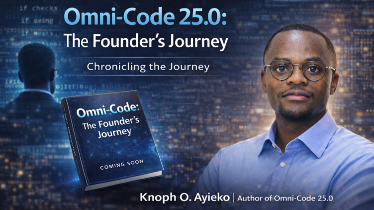

Omni-Code 25.0:
The Founder's Journey
A narrative on full-stack resilience, statutory systems, disciplined execution and building Omni-Legacy Limited.
Foreword
Software architecture is rarely just about code syntax; it is a direct reflection of structural discipline, mental resilience and systematic problem-solving. When you engineer systems designed to handle dynamic workflows or process statutory compliance frameworks, every edge case matters.
"We do not build software simply to execute commands; we build infrastructure to withstand complexity, scale human capability and endure changing environments."
Preface: The Genesis
The journey documented in Omni-Code 25.0 spans pivotal intersections: academic grounding in Information Technology, intense public service training, statutory tax analysis and founding an enterprise dedicated to technological impact.
From configuring full-stack JavaScript architectures to scaling web applications, this text logs the technical blueprints, strategic roadmaps and operational philosophies that underpin modern engineering leadership.
Foundations & Code Base
Every solid architecture begins with clear fundamentals. Transitioning from academic studies in Information Technology to real-world application deployment demands a deep appreciation for full-stack paradigms, type safety and clean system boundaries.
Modern web architectures rely on declarative UI frameworks paired with robust database schemas. Below is a foundational pattern illustrating serverless database connections within a Next.js environment:
import { Pool } from 'pg';
const pool = new Pool({
connectionString: process.env.DATABASE_URL,
ssl: {
rejectUnauthorized: false
}
});
export async function query(text: string, params?: any[]) {
const start = Date.now();
const res = await pool.query(text, params);
const duration = Date.now() - start;
console.log(`Executed query in ${duration}ms`);
return res;
}The Paramilitary Rigor
Discipline is not an abstract concept; it is forged through physical and mental conditioning. Experiencing rigorous paramilitary training instills an unwavering commitment to operational readiness, order and teamwork under pressure.
Operational Endurance
Pushing past perceived limits through structured physical conditioning and tactical focus.
Unwavering Precision
Executing directives cleanly without short-term compromises or procedural errors.
Systems & Tax Architecture
Navigating statutory frameworks requires the same precision as designing relational database schemas. Understanding tax administration, customs compliance, electronic invoicing and transfer pricing principles reveals how digital infrastructure integrates directly with national policy.
Building robust compliance tools demands clear verification routines, automated auditing logs and zero-trust validation mechanisms.
Incorporating Omni-Legacy
The transition from software practitioner to corporate director is marked by legal incorporation, governance structures and clear long-term strategy. Establishing Omni-Legacy Limited represented the convergence of technical innovation, corporate leadership and sustainable digital solutions.
The Master Architecture
Looking ahead requires setting multi-decade milestones across education, asset accumulation, scholarly research and family legacy. A founder's roadmap balances current technical execution with future academic and societal contributions.
Technical Appendix
- Full-Stack Suite: Next.js, React, TypeScript, Tailwind CSS, Node.js, PostgreSQL, Docker.
- Deployment Pipelines: Vercel CI/CD, GitHub Version Control, Automated Domain Routing.
- Statutory Frameworks: eTIMS Integration Architecture, Tax & Customs Compliance Workflows.
Acknowledgments
Grateful to family, colleagues, mentors and the software community whose support continues to power this journey.